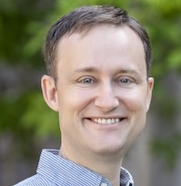

Keynote Speakers (Alphabetical Order)



Nathan Jacobs
WUSTL
Imageomics is an emerging interdisciplinary field at the crossroads of machine learning (ML), computer vision (CV), and biological sciences. It leverages visual data—from microscopic images of single-cell species to videos of megafauna—to extract and analyze biological information, specifically traits. By grounding ML models in existing scientific knowledge, Imageomics aims to make traits computable from images, facilitating insights into the evolution and function of living organisms. Imageomics poses research problems that resonate with the broad machine-learning community: multimodal representation learning, object detection and tracking, few-shot learning, imbalanced-class learning, video understanding, 3D modeling, hierarchical learning, etc. When people leverage ML tools to solve biological questions, the foundational bridges between ML and biological sciences also provide opportunities to address key challenges in ML, creating a virtuous cycle between the two fields.
We welcome participation from anyone interested in learning about the field of Imageomics, including:
The workshop will feature keynote talks, paper presentations, and discussions on the latest research in Imageomics. We encourage participants to submit papers and demos related to the topics outlined in the Call For Papers. The workshop will also provide opportunities for networking and collaboration among researchers from diverse backgrounds.
WUSTL
Arpita Chowdhury, The Ohio State University.
Zanming Huang, The Ohio State University.
Kazi Sajeed Mehrab, Virginia Tech.
| Name | Name | Name | Name | Name |
|---|---|---|---|---|
| Radosław Kuczbański | Paimon Goulart | Venkatesh Velugubantla | Juan Jose Garcia | Sanjeda Sara Jennifer |
| Yuetong Yu | Peilin Yang | Sooyoung Jeon | Kuan Lu | S M Rayeed |
| Botao Deng | Arpita Chowdhury | Zakk Heile | Arman Behnam | Dong Gyun Kang |
| Chengxuan Qian | Harshita Kukreja | Prateek Jalan | Yuecheng Li | Fengzhi Guo |
| Haoyun Deng | Aujasvit Datta | Divij Gupta | Rian Atri | Siddharth Venkatesh |
| Chih-Chuan Hsu | Subhamoy Mandal | Nathaniel Jewel | Amit Rand | Xiaolong Luo |
| Jiaman Wu | Nurmyrat Amanmadov | Khue Hoang-Ngo | Yuexing Chen | Shiyun Wa |
| Kaustubha V | MSVPJ Sathvik | Eduardo Hirata-Miyasaki | Duncan Stothers | Shalin B. Mehta |
| Zhuosheng Liu | Scott C. Lowe | Neil Gautam | Mithil Shah | Mallikarjuna Tupakula |
| Gunjana Dhakad | Hongkun Zhang | Zheda Mai | Jingwei Zhang | Yuzhou Wang |
| Namrata Banerji | Siddhesh Salfale | Nayan Goel | Meilong Xu | Ruhaib Muhammad |
| Valentin Duruisseaux | Shiqi Li | Zhengyuan Dong | Kyle Doherty | Jae Eun Song |
| Yongin Kwon | Debdoot Sheet | Shivam Rajendra Rai Sharma | Debanga Raj Neog | Anurag Malik |
| Anirudh Potlapally | Shuang Wang | David Carlyn | Xin Luo | Kaveh Safavigerdini |
| Justin Lee | Parkash Singh | Nasim Mohamed Ismail | Mridul Khurana | Pouyan Navard |
| Sina Khazaee Nejad | Mingfei Guo | Ziheng Zhang | Junhuan Yang | Suleiman A. Khan |
| Quang-Huy Nguyen | Jianyang Gu | Yingtie Lei | Soorya Pradeep | Brinnae Bent |
| John Quinto | Aditi Krishnakumar | Neehar Kondapaneni | Wenjun Liu | Chang Liu |
| Jialin Wu | Raghav Sharma | Zanming Huang | Isaac Xu | Ping Zhang |
| Samuel Stevens |